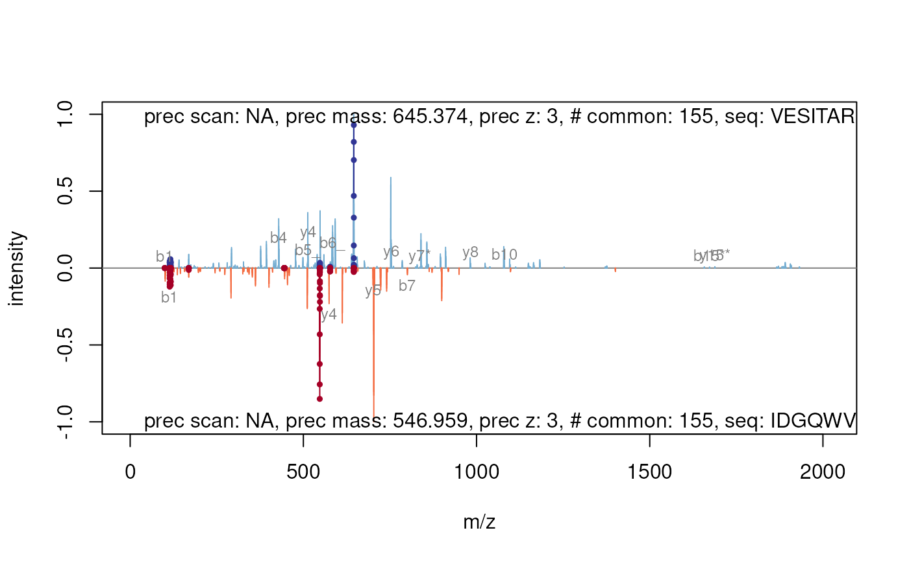
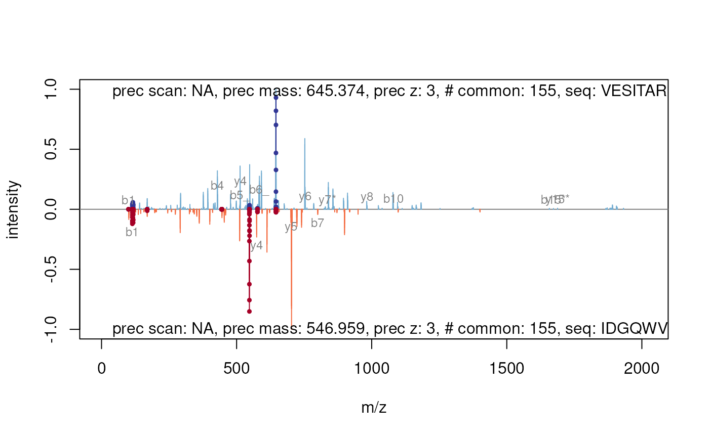

Plotting a 'Spectrum' vs another 'Spectrum' object.
plotSpectrumSpectrum-methods.RdThese method plot mass spectra MZ values against the intensities as line plots. The first spectrum is plotted in the upper panel and the other in upside down in the lower panel. Common peaks are drawn in a slightly darker colour. If a peptide sequence is provided it automatically calculates and labels the fragments.
Arguments
| x | Object of class |
|---|---|
| y | Object of class |
| ... | Further arguments passed to internal functions. |
Methods
signature(x = "Spectrum", y = "Spectrum", ...)Plots two spectra against each other. Common peaks are drawn in a slightly darker colour. The
...arguments are passed to the internal functions. Currentlytolerance,relative,sequencesand most of theplot.defaultarguments (likexlim,ylim,main,xlab,ylab, ...) are supported. You could change thetolerance(default25e-6) and decide whether this tolerance should be applied relative (defaultrelative = TRUE) or absolute (relative = FALSE) to find and colour common peaks. Use acharactervector of length 2 to providesequenceswhich would be used to calculate and draw the corresponding fragments. Ifsequencesare given thetypeargument (default:type=c("b", "y")specify the fragment types which should calculated. Also it is possible to allow somemodifications. Therefore you have to apply a namedcharactervector formodificationswhere the name corresponds to the one-letter-code of the modified amino acid (default: Carbamidomethylmodifications=c(C=57.02146)). Additional you can specifiy the type ofneutralLoss(default:defaultNeutralLoss()). SeecalculateFragmentsfor details. There are a lot of graphical arguments available to control the representation of the peaks and fragments. Usepeaks.pchto set the character on top of the peaks (default:peaks.pch=19). In a similar way you can set the line widthpeaks.lwd=1and the magnificationpeaks.cex=0.5of the peaks. The size of the fragment/legend labels could be set usingfragments.cex=0.75orlegend.cexrespectively. Seeparfor details about graphical parameters in general.
Author
Sebastian Gibb <mail@sebastiangibb.de>
See also
More spectrum plotting available in plot.Spectrum.
More details about fragment calculation: calculateFragments.
Examples
## find path to a mzXML file
file <- dir(system.file(package = "MSnbase", dir = "extdata"),
full.name = TRUE, pattern = "mzXML$")
## create basic MSnExp
msexp <- readMSData(file, centroided.=FALSE)
## centroid them
msexp <- pickPeaks(msexp)
## plot the first against the second spectrum
plot(msexp[[1]], msexp[[2]])
 ## add sequence information
plot(msexp[[1]], msexp[[2]], sequences=c("VESITARHGEVLQLRPK",
"IDGQWVTHQWLKK"))

itraqdata2 <- pickPeaks(itraqdata)
(k <- which(fData(itraqdata2)[, "PeptideSequence"] == "TAGIQIVADDLTVTNPK"))
#> [1] 41 42
mzk <- precursorMz(itraqdata2)[k]
zk <- precursorCharge(itraqdata2)[k]
mzk * zk
#> X46 X47
#> 2046.175 2045.169
plot(itraqdata2[[k[1]]], itraqdata2[[k[2]]])
## add sequence information
plot(msexp[[1]], msexp[[2]], sequences=c("VESITARHGEVLQLRPK",
"IDGQWVTHQWLKK"))

itraqdata2 <- pickPeaks(itraqdata)
(k <- which(fData(itraqdata2)[, "PeptideSequence"] == "TAGIQIVADDLTVTNPK"))
#> [1] 41 42
mzk <- precursorMz(itraqdata2)[k]
zk <- precursorCharge(itraqdata2)[k]
mzk * zk
#> X46 X47
#> 2046.175 2045.169
plot(itraqdata2[[k[1]]], itraqdata2[[k[2]]])